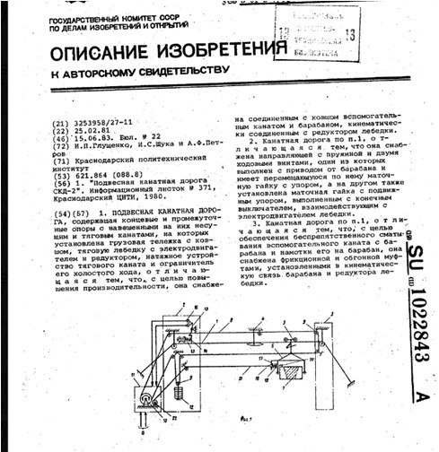

Что я могу сделать для процветания моей страны?
Эффективное применение канатного механизма в безопасности жителей здания при пожаре
(Первая часть) Арманбетов Нуржаусын
Как соединений здания образуя лифт перемещения, в экстренных ситуациях. (Как вниз, так и вверх)Рисунок 1
Рисунок 1 – иллюстрация в предположительный облик механизма
Черными линиями размечены канатные дороги, жирными точками механизм, который отображен внизу, возможно исследование построения аналогичной системы, новой более совершенной для данных условий, или же воспользовавшись изобретением 1983 года (Pисунок 2), с условием оплаты обладателю патента изобретения. При этом самое главное нужно отметить необходимость данной системы в том что оно позволит обезопасить здание в плане эвакуаций жителей того здания в котором произошел пожар, во избежание человеческих жертв. Пример 5 зданий входят в систему пожара безопасности, пожар произошел в 4 здании предположим, на 1 вом и 2 этаже и распространяется выше по этажам, здание этажностью 10, выход на улицу затруднен, запасные лестничные эвакуационные маршруты отсутствуют, варианты решения будут естественно прорываться через огонь, с мокрой тряпкой закрыв нос и рот, дыша в нее, но велико потеря сознания и привидение человека в смертное состояние, не приведи конечным итогом такого, возможным идеальным будет данный механизм эвакуаций, а это жители поднимаются на крышу здания, где размешен, будет механизм и будет осуществлен мероприятие по спасению жизни.
Рисунок 2 – механизм 1983
Безопастность в общественном транспорте
Долго размышляя о безопасности граждан, использующих авто транспорт в частности «автобусы», то есть предполагая угрозу даже 0 целых 1 миллионный процент, произведение мер защиты для усиления безопасности граждан считаю вполне необходимым.
Решение, о котором я подумал, установить в автобусе метало детектор с реагированием на пульт правоохранительным органам, при возникновении данной угрозы, пусть даже окажется угрозой столовая ложка или же гора монет в кармане у пассажира, а так же применение Скоростного распознавания отпечатков пальцев в биометрических системах, дополнительно установить камеры видео наблюдения с целью записи и хранения до одного дня на больших хранимых данных в сервере, для того что бы сделать оценку риска, для поиска данного гражданина по базе среди людей, предполагаемых к риску. И регистрировать все риски предполагаемые и возможные проезды «зайцев» в автотранспорте и при выявлении камерами случаев краж так же выполнение мер рекомендованных по данным случаям. В качестве распознавания лица надежней использовать нейронные сети, так как обладает всеми необходимыми функциональными свойствами высокого качества распознавания. Рисунок 3 картинка из интернета автобус, Рисунок 4 картинка из интернета металодетектор, Рисунок 5 механизм размешения металодетектора в автобусе, Рисунок 6 камер распознавания личности пассажира

Рисунок 3 – иллюстрация картинка из интернета автобус

Рисунок 4 – иллюстрация картинка из интернета металодетектор

Рисунок 5 – иллюстрация механизма размешения металодетектора в автобусе

Рисунок 6 – картинка из интернета камера
Цель: внедрение предполагает повысить безопасность благодаря выявлению у пассажиров, колющих режущих и тому подобных инструментов которые могут быть угрозой в руках объекта, который предрасположен на использование данного предмета в корыстных злых замыслах. Рисунок 7 – Скорость распознавания отпечатков пальцев в биометрических системах

Рисунок 7 – Скорость распознавания отпечатков пальцев в биометрических системах
Одним из важных факторов использования биометрии в системах безопасности является скорость распознавания отпечатков пальцев. От этого зависит удобство пользования, к тому же высокая скорость помогает избежать очередей при идентификации. Ведь малая скорость идентификации может нивелировать главное преимущество биометрических систем безопасности - доступ пользователя только по своему идентификатору. Современные системы по отпечатку пальца по скорости работы сейчас уже сравнимы с RFID системами, работающими по бесконтактным картам. От поднесения карты к считывателю и прикладывания пальца к биометрическому сканеру до успешной идентификации проходит соизмеримое время.
Передвижное автоматизированное производство
Мысли о том, как делается кирпичи привели к изучению данного материала, в частности, того что оно изготовляется из глины или же в различных возможных соединении материалов при высоком нагревании в специальном печи в форме и возможно используя матрицу, состав так же бывает разнообразным, цемент + песок + вода, красный песок и известь + вода, и т.п. В целом данного природного ресурса в нашей стране предостаточно. Развитие технологического прогресса в частности электромашин и используя данные технологии выполнив крупногабаритный авто транспорт, который в себе сочетает так же технологию, которое работает от солнечной энергии, а также энергии ветра при этом обеспечивает другие устройства которые сочетает данный автотранспорт, а это механизмы и оборудования нужные для производства к примеру кирпича, тем самым сделать «передвижной завод по производству кирпича». Рисунок 8 Электромашина (случайная картинка из интернета), Рисунок 9 – ветрогенератор (случайная картинка из интернета)

Рисунок 8 – Электромашина (случайная картинка из интернета)

Рисунок 9 – ветрогенератор (случайная картинка из интернета)
Далее высушенный кирпич поступает на обжиг. В процессе обжига блоки приобретают свойства камня – становятся предельно прочными. На этом этапе используются специальные печи для обжига кирпича, в которые и помещаются на поддонах изделия. Температура обжига составляет в среднем 1000 ˚C. На данной стадии очень важен контроль технологов, поскольку все физико-химические процессы, проходящие в обжигаемом кирпиче, обеспечивают ему заданную прочность. Условия обжига в значительной степени влияют не только на технические характеристики изделий, но и на их внешний вид. Чем выше температура, тем насыщеннее будет цвет кирпича. А вот слабый обжиг даст светло-розовый окрас блоков Рисунок 10 – Электростанция ДЭУ-60.1-М (случайная картинка из интернета.

Рисунок 10 – Электростанция ДЭУ-60.1-М (случайная картинка из интернета)
Заключение: Что я могу сделать для процветания своей страны?
Все что в моих руках и то что под силу сделать, в частности, что возможно сделать для общества, тем самым быть полезным.